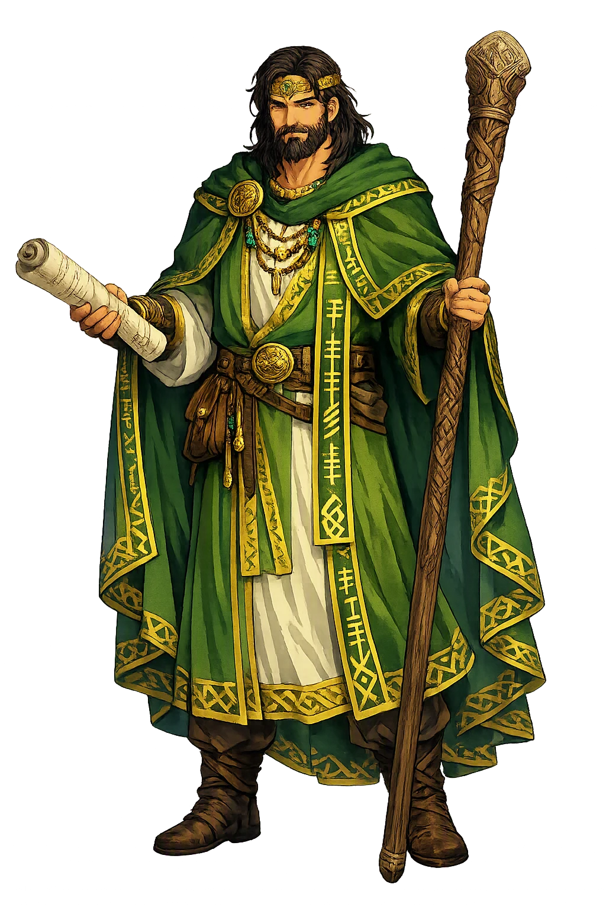
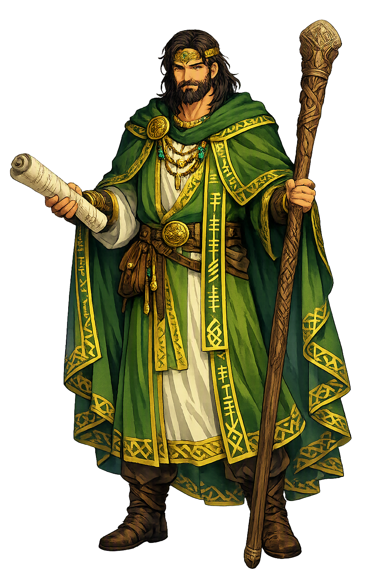

Unicode restoration and ASCII comparison
Ogma
The name survives in scholarly transliteration. Ogma is the standard Celtic romanisation, documented in academic sources — “The grim one”. Because the spelling uses only Latin letters, the form is the same in both ASCII and Unicode.
No indigenous writing system is securely attested for individual celtic names. The form shown is a modern scholarly transliteration.
ogma
The plain ogma form is identical to the Unicode restoration. Because this name is already written in Latin letters, no diacritics, stress, or script information were lost — only capitalization differs.
Ogma
The Unicode restoration does not need to recover lost marks for Ogma. Its value is canonical spelling and consistent cataloguing, not the reconstruction of erased orthography. The domain is readable as-is to both DNS and humanity.
Ogma.com → ogma.com
The non-ASCII characters in Ogma are encoded while the ASCII remains visible. To the DNS, it is Punycode. To humanity, it is Ogma.
How Ogma is preserved in writing
No indigenous writing system is securely attested for individual celtic names. The form shown is a modern scholarly transliteration.
Contribute scholarly provenance →Owned, ideal, and ASCII forms of Ogma
Ogma
The full Unicode restoration. ogma.com is not in the PuniCodex collection — it is watched for release; if it drops, this temple upgrades to an owned flagship.
How Ogma was spoken
Eloquence, Writing
Ogma is the champion — in trenfer, the strong man — of the Túatha Dé Danann, and the Irish tradition made his strength and his speech one gift: the Auraicept na n-Éces calls him a man well skilled in speech and in poetry, and credits him with the invention of the ogham itself. His Gaulish cognate Ogmios, the old-man Herakles of Lucian's account, drags a willing crowd by golden chains fastened to his tongue: in the Celtic world, eloquence is what the strongest god is for.
The notched alphabet of early Ireland, carved along the edge of standing stones — of which the Scholars' Primer says: the father of the ogham is Ogma, the mother of the ogham is the hand or knife of Ogma.
The sword of Tethra, king of the Fomorians, found by Ogma after Mag Tuired — which recounted every deed that had been done with it, as swords did in those days.
The great stone Ogma hurled to test the stranger at the gate — which Lugh threw back through the rath to its own place, proving the stronger champion had arrived.
The champion's portion under the tyranny of Bres: hauling fuel for a usurper's fires, so weakened by hunger that the sea washed over him as he carried it.
Stories of Ogma
Ogma's dossier is compact and exact: the Lebor Gabála gives his lineage, Cath Maige Tuired gives his deeds — the serf-labor under Bres, the flagstone test at Lugh's coming, the killing of the Fomorian king's son, and the talking sword — and the learned tradition gives him his strangest honor, the invention of the ogham.
The Lebor Gabála Érenn, Ireland's medieval book of invasions, writes Ogma into the divine genealogy: Ogma son of Elatha, of the line of Delbaeth, and brother of the Dagda himself. When the Túatha Dé Danann came to Ireland out of the four northern cities, Ogma came with them as the champion of the race — in trenfer, the strong man, the standing title the texts give him. His place in the pantheon is therefore double from the first mention: the arm of the Túatha Dé Danann, and the brother of their all-father.
When the half-Fomorian Bres was made king and laid the Túatha Dé Danann under tribute, the greatest of them were put to work like serfs. The Dagda was set to building raths, and Ogma — the champion of the whole divine race — was set to hauling firewood for the fortress. The tale does not spare him: so weakened was he by hunger that the sea washed over him as he carried the fuel. The image is the tradition's sharpest measure of what Bres' kingship cost: the strong man of the gods, bent double under a usurper's fires.
When Lugh came to Tara before the battle, asking admission by his arts, it fell to Ogma to test the stranger's strength. Ogma hurled the great flagstone of the rath — a stone beyond ordinary lifting — and Lugh answered by hurling it back through the rath to its own place. Ogma then challenged the newcomer to single combat, and Lugh declined: his arts, he said, would be tested soon enough against the Fomorians. The episode is the tradition's own changing of the guard — the old champion making way, stone by stone, for the many-skilled king who would lead the war.
At the second battle of Mag Tuired the champion earned his title back. In the press of the fighting Ogma killed Indech, son of Dé Domnann, the Fomorian king — the same Indech whose blood the Mórrígan had promised to the Dagda at the ford. And after the battle came the strangest prize in the Irish corpus: among the spoils Ogma found Orna, the sword of Tethra, king of the Fomorians. He unsheathed it and cleaned it, and the sword recounted all the deeds that had been done with it — for it was the custom of swords in those days, when drawn, to tell what they had done. The champion of the gods carried the only weapon in the world that could bear witness to itself.
After the rout, the Fomorians had carried off the Dagda's harper, and the harp itself hung on the wall of the hall where Bres feasted. Three of the Túatha Dé Danann went in pursuit: Lugh, the Dagda, and Ogma — the king, the all-father, and the champion. The Dagda called the harp by its names, and it sprang from the wall to his hand, killing nine men in its path, and played the three strains of weeping, laughter, and sleep until the whole enemy host slept. Ogma walked out of that hall beside his brother and his king, through sleeping foes — the serf of the firewood years restored to the company of the gods' great deeds.
The Scholars' Primer — the Auraicept na n-Éces, the medieval Irish grammar of the poets — closes Ogma's dossier with the honor no other Irish god receives. Ogma, a man well skilled in speech and in poetry, invented the ogham for the speaking of Gaelic; and the tract fixes the paternity in a formula: the father of the ogham is Ogma, and the mother of the ogham is the hand or the knife of Ogma. The glossarial tradition adds the epithet Grianainech, the Sun-faced. The champion who hauled firewood under a usurper is the same figure the learned tradition made the author of the alphabet itself — strength and letters, in Ireland, kept in one hand.
Ogma is the Celtic answer to a question every culture asks: what is strength for? The Irish texts could have left him a strong man — the champion who carries the wood, hurls the stone, and kills the Fomorian king's son, and nothing more. Instead the learned tradition took the same hand that dragged the firewood and made it the mother of the alphabet, and the Gauls, three centuries before the Irish manuscripts, had already painted the answer: the strongest god is the one whose victories need no chains, because men follow his tongue willingly. Even Ogma's weapon obeys the rule — Orna, the sword of the enemy king, becomes precious not for what it cut but for what it tells. The champion's whole dossier argues one proposition: the word is the deed that survives the doing. The stones of Ireland still stand along their stemlines, notched with the letters Ireland assigned to Ogma's paternity — the strongest kind of monument, because it is made of speech.
Enter Extended Lore